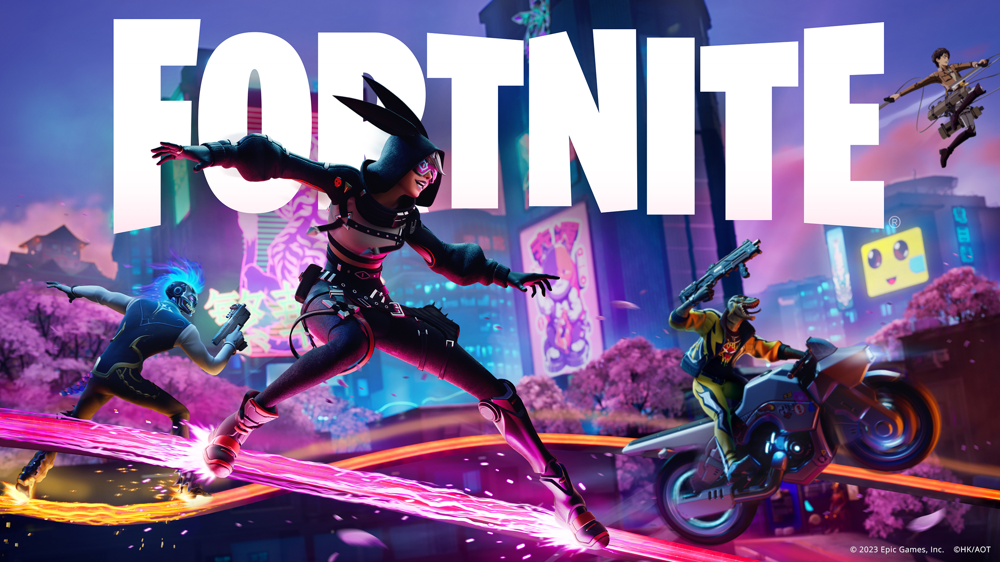
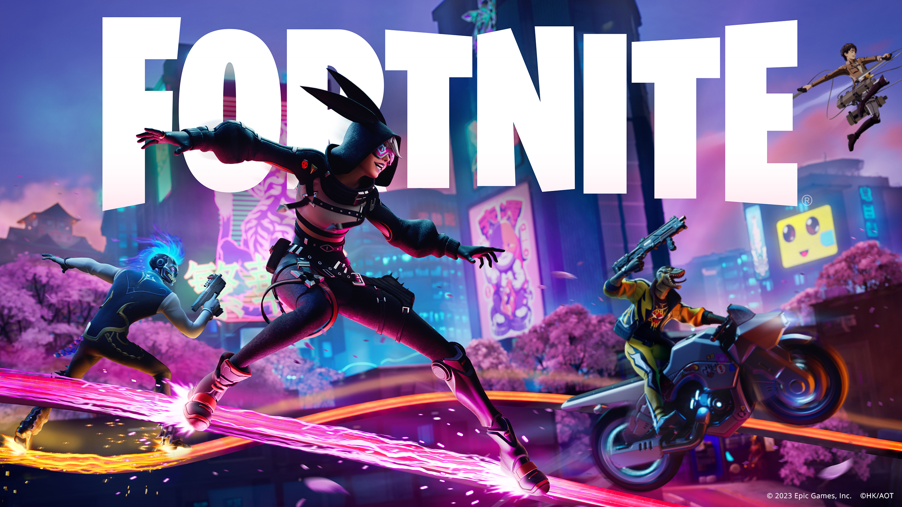

Os jogos eletrônicos têm sido uma forma popular de entretenimento há décadas. Desde os jogos clássicos como "Pac-Man" e "Tetris" até os lançamentos mais recentes como "Fortnite" e "Valorant", a indústria de jogos cresceu significativamente ao longo dos anos.
Os jogos clássicos, como "Super Mario Bros." e "The Legend of Zelda", são apreciados por muitos jogadores até hoje. Alguns jogos, como "Minecraft", continuam a ser populares apesar de terem sido lançados há mais de uma década.
Nos últimos anos, jogos como "Fortnite", "Apex Legends" e "PlayerUnknown's Battlegrounds" ganharam popularidade com o surgimento do gênero de jogos de batalha real. Outros jogos, como "Overwatch" e "Valorant", tornaram-se conhecidos por seu estilo de jogo em equipe e competição.
Além disso, a tecnologia tem permitido o desenvolvimento de jogos mais imersivos e realistas. Jogos de realidade virtual e aumentada, como "Beat Saber" e "Pokemon Go", têm proporcionado experiências de jogo únicas para os jogadores.
Em resumo, o mundo dos games tem evoluído e se diversificado ao longo dos anos, proporcionando aos jogadores uma ampla variedade de opções para escolher e desfrutar.


 
